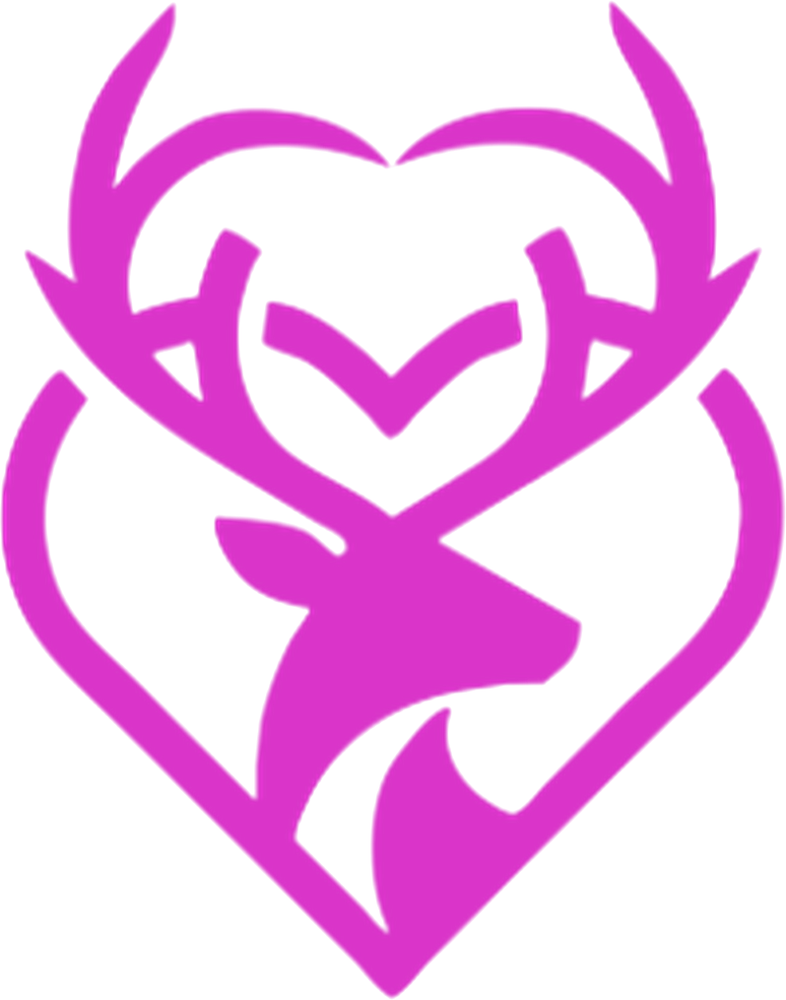

LITTLE DEER LODGE Prepare. Awaken. Integrate.The Kundalini Hoodie
Crown to Root. A wearable guide for breath, light and sound.
A fitted hoodie with seven soft pads placed on the energy centers, front and back. Each pad glows its chakra color and hums a gentle vibration while a matching tone plays through any headphones. A quartz crystal sits at the third eye, amethyst crowns the hood, and a magnetic choker holds the throat. The companion app breathes with you and moves the light up your spine, over the crown and back into the heart.
One full breath cycle
The light rises from the root up the back on a five-count inhale, crowns, then falls through the third eye. A three-count exhale drops it to the Dantian and gathers it in the heart, where she manifests.
Love is the technology. You are the device.
See it worn


The signature sequence
- Inhale, five counts. The root pad lights red and the glow climbs the spine strip, pad by pad, up the back of the neck to the crown.
- Crown. The amethyst glows violet and the hood warms with near-infrared.
- Over and down. The light pours through the quartz at the third eye and down the face to the throat.
- Exhale, three counts. It drops down the front to the sacral, the Dantian, then rises to rest in the heart, glowing green.
- Manifest. Hold the heart, speak the intention, repeat the cycle.
Seven centers
| Center | Light | Statement | Tone | Pad hum |
|---|---|---|---|---|
| Crown | Violet / white | I know | 963 Hz | 241 Hz |
| Third eye | Indigo | I see | 852 Hz | 213 Hz |
| Throat | Blue | I speak | 741 Hz | 185 Hz |
| Heart | Green | I love | 639 Hz | 160 Hz |
| Solar plexus | Yellow | I can | 528 Hz | 132 Hz |
| Sacral | Orange | I feel | 417 Hz | 208 Hz |
| Root | Red | I am | 396 Hz | 198 Hz |
What's inside
Pads
Dime-sized silicone dots, each with a tiny RGB light and a coin vibration motor. Seven on the body plus the spine light strip.
Crown and third eye
Amethyst at the hood peak, violet light out and near-infrared in. A small round polished quartz (about 8 mm) in the brow band, lit indigo, with a buzzer behind it.
Magnetic choker
Built into the collar. Throat pad at the front, neck pad at the back. The drawstrings finish as the necklace.
Fabric
Fitted, androgynous cut. Brow band and cuffs knit with far-infrared bioceramic yarn and tourmaline.
Power and sound
Small battery and Bluetooth pod at the low back. Phone app runs the session; tones play through any headphones.
Companion
The app guides the breath, speaks the "I am" statements and can grow into Kissifer, the AI friend.
Cost and price
Parts, first prototype
Parts at 1,000 units
Planned retail
The thinking behind it
Well supported
- Slow breathing with a longer exhale calms the nervous system
- Gentle vibration and guided attention aid relaxation
Emerging
- Far-infrared textiles (Celliant received an FDA general-wellness determination in 2017)
- Light color and mood
Tradition
- Chakra colors, solfeggio tones and the stones come from spiritual practice, offered as ritual and meaning
Roadmap
- Line sketch and prototype
- App with breath pacing
- Small test run, then Kissifer voice